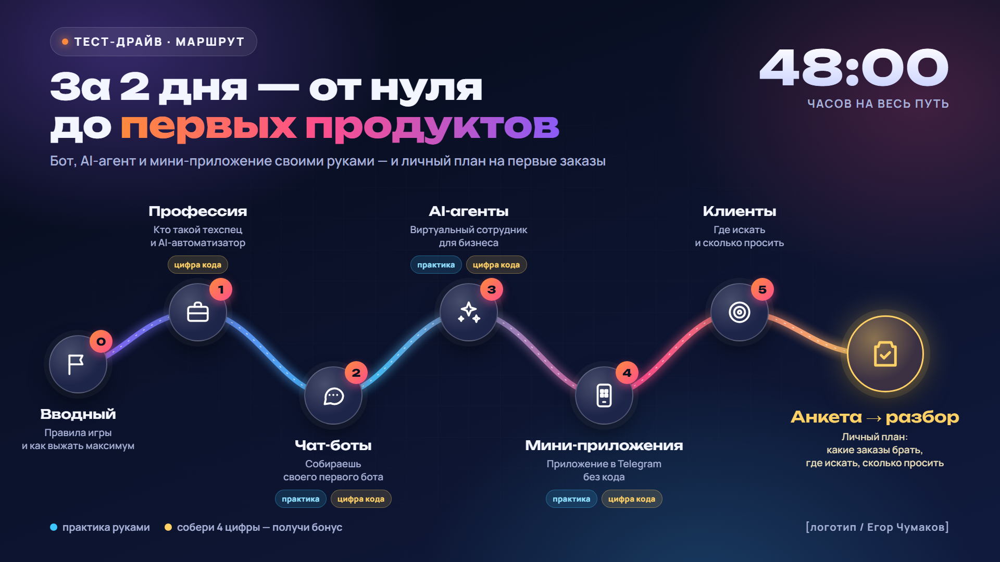
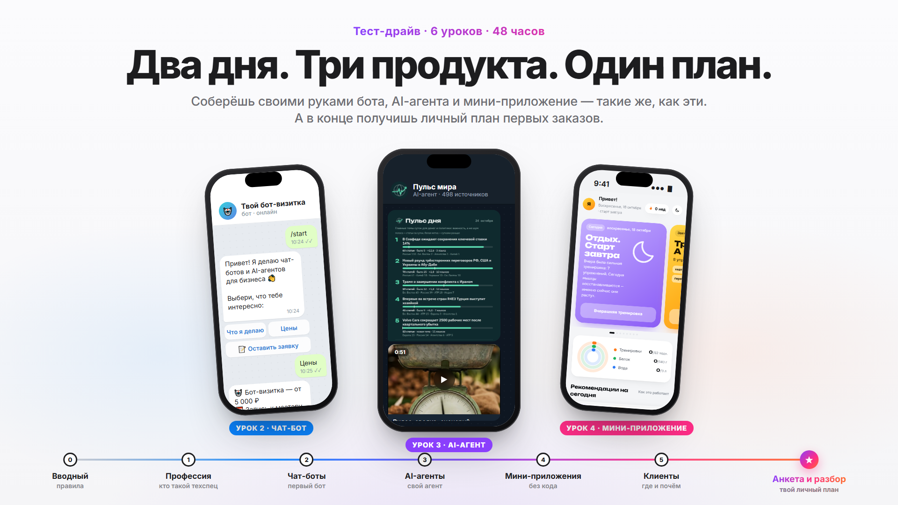
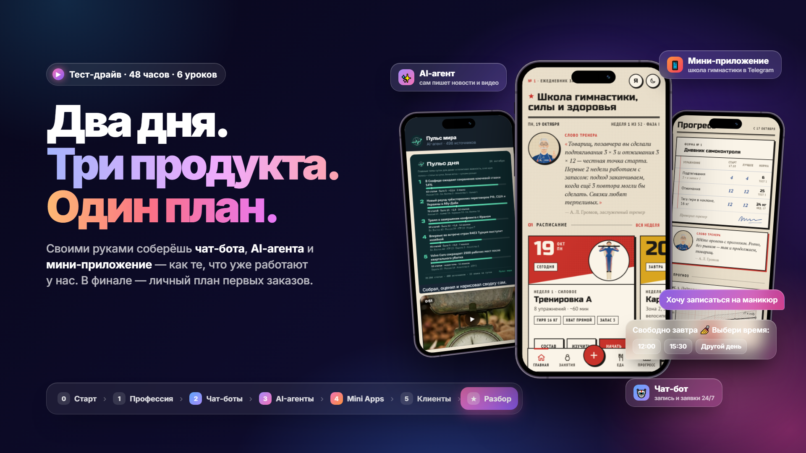
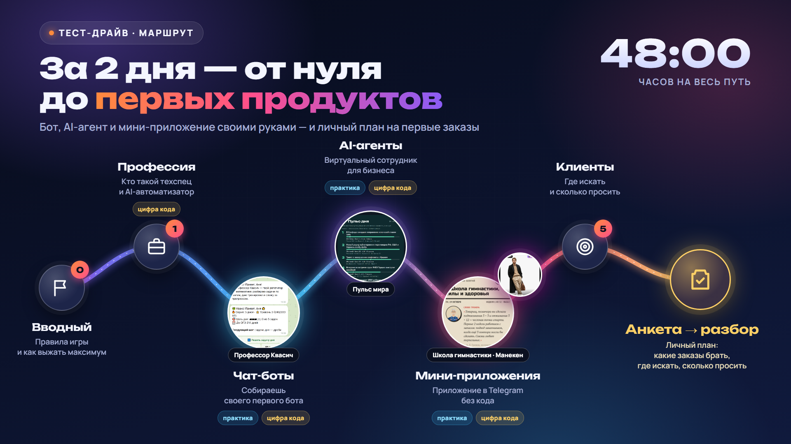
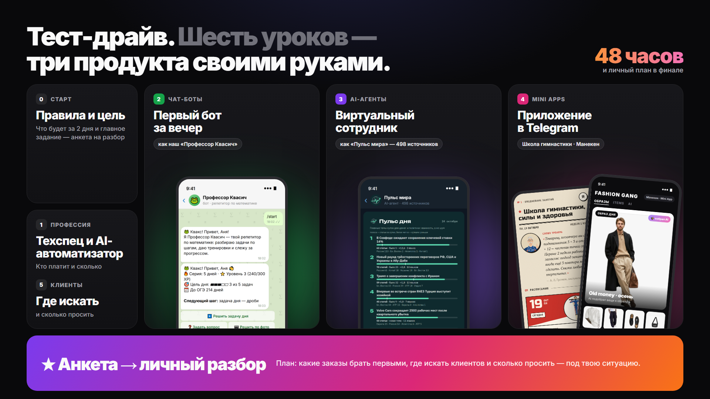
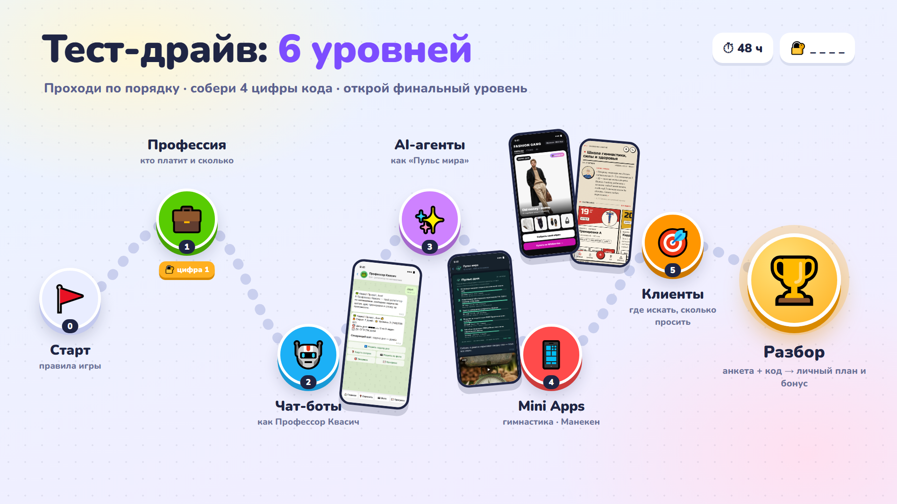
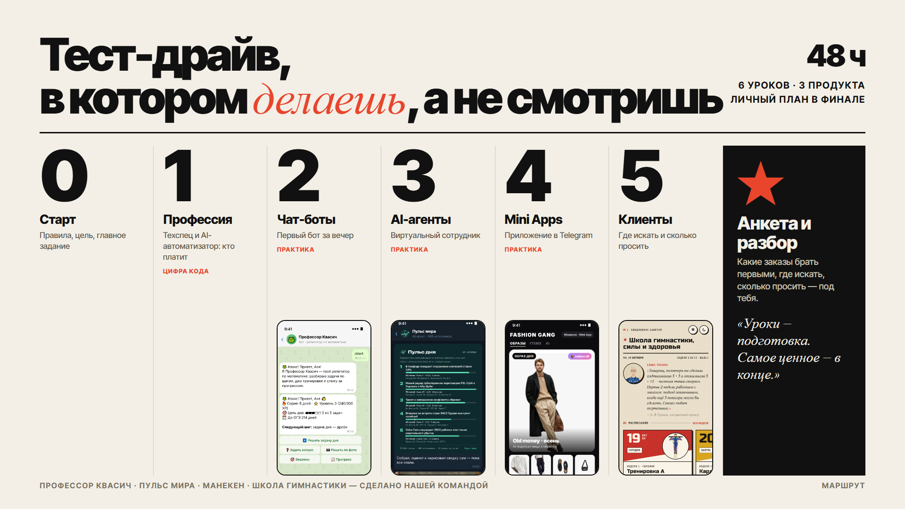
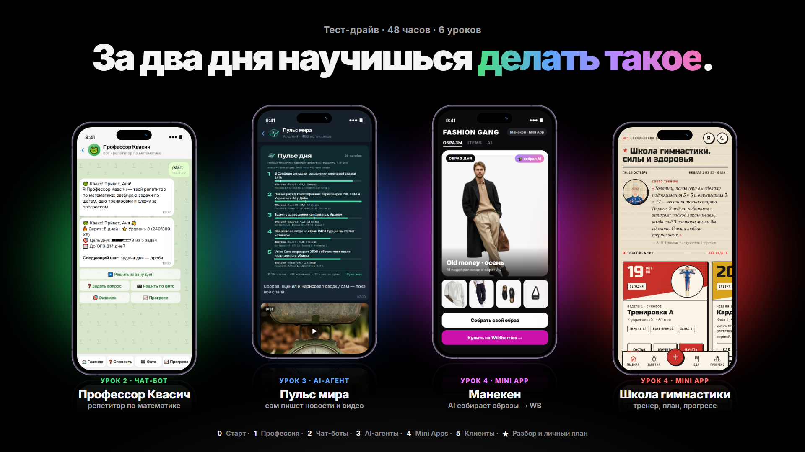

Сценарий тест-драйва
Сценарий тест-драйва v1 (черновик для правок). Что говорит Егор в каждом уроке. Комментируйте под каждым уроком — правки увидят все.
Как устроен сценарий
Основа — наша структура (вводный + 5 уроков). Приёмы подачи взяты у конкурентов (Пурвиньш, Паутов, Муратов, Даня) и пересказаны своими словами: ни одной их фразы в тексте нет. Голос — Егор, от первого лица, на «ты», спокойно и по-взрослому. Без стыжения и без «последнего шанса».
Как читать:
- «Егор:» — текст, который Егор говорит в кадре. Это черновик речи, его можно пересказывать своими словами.
- На экране: — что показываем: слайд, запись экрана, скрин.
- Приём: — пометка для команды, откуда идея и зачем она здесь. В видео не звучит.
- [в квадратных скобках] — нужно вставить реальные данные: цифры, кейсы, скрины, ссылки. Ничего не выдумываем.
Сквозные механики (во всех уроках):
- Код из 4 цифр. По одной цифре в уроках 1, 2, 3 и 4. Цифра появляется на слайде в смысловой точке (после доказательств, после практики), а не случайно. Код + заполненная анкета = бонус: секретное мини-приложение [что внутри — решить: например, «каталог 30 готовых идей ботов с ценами»]. Само бонусное мини-приложение заодно показывает, что такое Mini App.
- Анкета на разбор — главное ДЗ. Упоминаем во вводном (подробно), в уроках 1, 3 и 5 (коротко). Разбор подаём как личный план, а не «звонок с менеджером».
- Дедлайн 48 часов — темп, а не угроза. Всегда с клапаном: «не успеваешь — напиши, продлим».
- Практика сдаётся в чат (скрин или ссылка). За каждую сданную практику — небольшой бонус.
- В конце каждого урока: итог в 3 пунктах → что ещё не умеешь → анонс следующего урока с пользой.
Организационный модуль + мотивация (до 10 минут)
Цель урока: человек понимает, что его ждёт за 48 часов, зачем досматривать до конца, и делает первое маленькое действие (пишет «+» в чат).
 Обложка: вводный урок · открыть
Обложка: вводный урок · открыть
1. Приветствие и договорённость о честности (≈1 мин)
На экране: Егор в кадре.
Егор: «Привет! Меня зовут Егор, и следующие два дня мы проведём вместе. Сразу договоримся о двух вещах. Первое: здесь не будет историй про миллион за неделю. Это работа, и деньги в ней появляются от действий, а не от просмотра. Второе: всё, что я покажу, ты сможешь повторить сам. Не нужно быть программистом, хватит телефона или компьютера, интернета и пары часов в день».
Приём: рамка честности ставится до любых цифр (Муратов). Она же первый ответ на «это развод».
2. Что тебя ждёт (≈2 мин)
На экране: слайд-карта тест-драйва: вводный → 1 профессия → 2 чат-боты → 3 AI-агенты → 4 мини-приложения → 5 клиенты → анкета и разбор.
 Карта тест-драйва · открыть
Карта тест-драйва · открыть
Все слайды всех уроков сделаны в одном стиле — v1/v4 (тёмный, «светящаяся дорога»). Они стоят ниже под каждым «На экране», а вся колода собрана на странице «Слайды тест-драйва» (/course/slides_deck.html). Варианты карты, из которых выбирали:

v1 — светящаяся дорога (тёмный) · открыть
v2 — светлый Apple, три телефона · открыть
v3 — яркий премиум, стекло, 3D-телефоны · открыть
v4 — дорога v1 + «линзы» с нашими продуктами · открыть
v5 — бенто-сетка (тёмный) · открыть
v6 — игровая карта уровней · открыть
v7 — журнальный минимализм (светлый) · открыть
v8 — витрина: 4 продукта на айфонах · открытьЕгор: «За эти два дня ты с нуля разберёшься в трёх вещах, за которые бизнес сейчас платит: чат-боты, AI-агенты и мини-приложения в Telegram. Это не теория: в уроках 2, 3 и 4 ты своими руками соберёшь бота, агента и посмотришь, как делается мини-приложение. В пятом уроке разберём главное: где брать клиентов и как назначить цену.
Уроки короткие, по 15–20 минут. Смотри по порядку: каждый следующий опирается на предыдущий».
3. Самое главное — разбор (≈1,5 мин)
На экране: слайд «Уроки → анкета → личный разбор → твой план».
 Уроки → анкета → разбор → план · открыть
Уроки → анкета → разбор → план · открыть
Егор: «А теперь самое важное, ради чего вообще стоит дойти до конца. Уроки — это подготовка. Самое ценное будет в конце: личный разбор твоей ситуации. Я посмотрю, где ты сейчас: какая работа, сколько свободных часов, что уже умеешь и к какому доходу хочешь прийти. И мы вместе составим план, с каких задач начать и где искать первых клиентов именно тебе.
Чтобы попасть на разбор, нужно сделать одно главное домашнее задание: в конце заполнить анкету. Заполняй её честно и подробно: по ней я готовлюсь к разговору, и чем точнее ответы, тем полезнее будет план».
Приём: иерархия «уроки → разбор» в первую минуту (Пурвиньш, Паутов) + четыре оси разбора (Муратов). Повторяем в уроках 1, 3, 5.
4. Почему 48 часов (≈1 мин)
На экране: таймер «48:00:00».
 Таймер 48:00:00 · открыть
Таймер 48:00:00 · открыть
Егор: «На весь тест-драйв у тебя 48 часов. Не потому, что я хочу тебя торопить. Просто я видел много раз: если отложить «на потом», интерес остывает, и человек так и не доходит до результата. А ещё на разборы у меня ограниченное время: [одновременно в тест-драйве не больше 10 человек — проверить, актуально ли]. Поэтому два дня — честный темп.
Если что-то случилось, заболел, завал на работе — просто напиши в чат, продлим. Я работаю с теми, кто делает, а не с теми, кто успел всё идеально».
Приём: дедлайн как фильтр + «клапан» продления (Пурвиньш/Паутов), но без «бота-вышибалы» и без «халявщиков».
5. Мотивация: свобода фриланса (≈2 мин)
На экране: [фото из жизни Егора: рабочее место, ноутбук не в офисе, путешествие — что есть реально].
 Свобода = право выбора + фото Егора · открыть
Свобода = право выбора + фото Егора · открыть
Егор: «Почему я вообще этим занимаюсь и почему зову тебя. Фриланс для меня — это право выбора. Когда проснуться. Сколько клиентов взять. Откуда работать: из дома, из кафе или [из другой страны — вставить реальный опыт или план Егора, например Таиланд, только если это правда].
Но скажу честно: свобода — это и плюс, и минус. Никто не стоит над душой, поэтому сроки и график ты держишь сам. Это навык, и ему тоже можно научиться».
Приём: одна сцена-мечта + «свобода = право выбора» + честный минус (Муратов). Таиланд — только если это правда про Егора.
6. Глобальная идея: золотая жила (≈1 мин)
На экране: слайд «Бизнесу нужна автоматизация → делать её некому → это делаешь ты».
 Золотая жила · открыть
Золотая жила · открыть
Егор: «И главная мысль, с которой я хочу тебя оставить перед первым уроком. Ниша AI и технических специалистов — это сейчас одна из самых недооценённых возможностей. Бизнес уже понял, что без ботов и нейросетей отстаёт. А людей, которые умеют это внедрять просто и понятно, мало. На таких рынках выигрывает не самый опытный, а тот, кто зашёл раньше».
7. Как смотреть и первое действие (≈1 мин)
На экране: слайд «3 правила» + стрелка на чат.
 3 правила + «+» в чат · открыть
3 правила + «+» в чат · открыть
Егор: «Три правила, чтобы от этих двух дней был толк. Первое: на время тест-драйва выключи внутреннего критика. Не «да это не для меня», а «что из этого я могу применить». Второе: любые вопросы — в чат. Глупых вопросов здесь нет. Третье: время — это тоже плата. Тест-драйв бесплатный, но ты отдаёшь ему два вечера. Давай сделаем так, чтобы они окупились.
А теперь первое действие: напиши в чат «+», если готов начать. Я пришлю первый урок. Время пошло».
Приём: блок «как смотреть» без унижения (взамен «маски красавчика»), «+» как микродействие и старт таймера (Пурвиньш/Паутов). Техническое: под видео — короткая памятка «если видео не открывается» (браузер, VPN, проверить папку «Спам» в почте).
Кто такой техспец и AI-автоматизатор (≈20 минут)
Цель урока: зритель верит Егору, видит, что профессия реальна и платят за неё, понимает два направления. Получает первую цифру кода.
 Обложка урока 1 · открыть
Обложка урока 1 · открыть
1. Похвала и игра с кодом (≈1,5 мин)
На экране: Егор в кадре → слайд «Код: _ _ _ _».
 Игра: код _ _ _ _ · открыть
Игра: код _ _ _ _ · открыть
Егор: «Ты здесь, и это уже больше, чем сделали многие, кто нажал на ссылку и закрыл. Перед тем как начать, маленькая игра. В уроках с первого по четвёртый на слайдах будут появляться цифры. Всего их четыре. Собери код и пришли его в чат вместе с анкетой в конце: за него ты получишь [бонус: секретное мини-приложение с …]. Цифры не прячутся, но и не повторяются, так что смотри внимательно. Первая будет уже в этом уроке».
Приём: сквозная игра (все конкуренты). Отличие: приз — наше мини-приложение, которое само демонстрирует урок 4.
2. История Егора (≈6 мин)
На экране: фото по ходу истории [склад/овощебаза, офис, таблицы — что есть].
 История Егора: таймлайн + места под фото · открыть
История Егора: таймлайн + места под фото · открыть
Егор: «Расскажу о себе, чтобы ты понимал, почему я имею право об этом говорить. И ещё потому, что, возможно, ты сейчас на том же перекрёстке, где был я.
В 2015 году я приехал в Москву с одной мыслью: деньги только в своём бизнесе. Первая работа — склад. Мы с напарником брали овощи на большом складе и развозили по овощебазам. Подъём в пять утра, в кузове холодно, а денег меньше, чем у курьера.
Потом пять лет я пробовал своё дело: промоагентство, мебель, производство, маркетплейсы. Четыре бизнеса, а в кармане — как у менеджера в найме.
В 2021 году я принёс аудиторам отчёты и спросил: где я теряю деньги? Мне ответили: «Сходи в большую компанию и посмотри, как устроено у них». Мне было 28, и идти в найм было, честно, унизительно. Но я пошёл.
И вот там я увидел то, что изменило всё. Люди руками чистили ключевые слова, собирали отчёт из пяти таблиц и пересылали его руководителю. Каждый день. Я собрал таблицу, которая делала это сама. Потом вторую. Потом бота. Через месяц мне стали доплачивать. А к 2023 году за такую работу мне платили 300, потом 400, потом 500 тысяч в месяц.
Я тогда подумал: деньги лежали в соседней комнате, в экселе. Я пять лет искал их не там.
А потом пришли AI-агенты. Те же задачи стали занимать три-четыре часа вместо десяти. Нейросеть не отняла у меня работу. Она отняла у меня шесть часов в день.
Сейчас я делаю чат-ботов и AI-агентов для онлайн-школ, экспертов, магазинов, кафе и салонов. И я не программист. Всё, что я делаю, можно освоить, если понимать, какую задачу ты решаешь».
Приём: каркас «зачем рассказываю → корни → яркая бытовая сцена (кузов в пять утра) → точка выбора → инсайт → сейчас → мост к зрителю» (Пурвиньш, Паутов). Все факты — из брифа Егора, ничего не добавлено. Список покупок не даём.
3. Боль рынка: почему сейчас (≈3 мин)
На экране: [скрины новостей/вакансий о сокращениях и автоматизации — с источником].
 Рынок: места под скрины новостей · открыть
Рынок: места под скрины новостей · открыть
Егор: «Теперь посмотри, что происходит вокруг. Компании массово сокращают людей на рутинной работе: тех, кто отвечает на одинаковые вопросы, переносит данные из таблицы в таблицу, обзванивает по списку. [Вставить 1–2 факта с источником.]
Кто-то видит в этом угрозу. А я вижу вот что: бизнесу жизненно нужна автоматизация, но сам он её не сделает. Владельцу салона некогда разбираться в нейросетях. Онлайн-школе страшно сломать продажи. Им нужен человек, который придёт и сделает. И если ты это умеешь, клиенты начнут искать тебя сами.
Мне тоже сначала было страшно, что ИИ заменит людей. А потом я понял простую вещь: нейросеть сама себя в бизнес не встроит. Это делаем мы».
Приём: страх ИИ сначала от первого лица, потом разворот (Муратов). Цифры рынка — только с источником (у конкурентов источников нет, это наше преимущество).
4. Два направления (≈3 мин)
На экране: слайд в две колонки.
 Два направления · открыть
Два направления · открыть
Егор: «В этой профессии есть два пути, и мы пройдём оба.
Первый — технический специалист, создатель чат-ботов. Это протоптанная дорога: понятная, востребованная, работы много. Бот для записи к мастеру, автоворонка к вебинару, рассылки, приём оплат.
Второй — специалист по AI-автоматизации. Это профессия нового времени. Она только выходит на рынок: тут агенты, которые сами отвечают клиентам, разбирают заявки, пишут тексты, считают. Чеки здесь выше, а конкурентов пока мало.
Хорошая новость: второе растёт из первого. Умеешь собрать бота — сможешь научить его думать с помощью нейросети».
5. Доказательства и деньги (≈4 мин)
На экране: прайс по услугам → [скрины вакансий «ищу техспеца» из чатов] → [кейсы учеников, если есть: точка А → сумма → одна деталь жизни].


Егор: «Сколько за это платят. Вот примерные цены на рынке: • бот-подарок за подписку — 5–10 тысяч; • запись к мастеру — 5–15 тысяч; • автоворонка к вебинару — 10–25 тысяч; • мини-приложение — 20–40 тысяч; • AI-консультант — 50–70 тысяч; • сопровождение — 10–30 тысяч в месяц с одного клиента.
И одна и та же сумма собирается по-разному. Например, 100 тысяч в месяц — это [5 ботов по 20 тысяч], или [2 AI-консультанта по 50], или [4 клиента на сопровождении по 25]. Какой путь твой — как раз обсудим на разборе.
Если сейчас ты не веришь этим цифрам — это нормально, значит, у тебя есть здоровый скепсис. Поэтому я не прошу верить. Через пару уроков ты сам соберёшь бота и сам поймёшь, сколько на это ушло времени.
Кстати, бот, через который ты сейчас получаешь уроки, — тоже работа техспеца. [Собран за N часов, на рынке такой стоит M — вставить реальные цифры.]
И честно про риски: это не кнопка «деньги». Первые недели — это обычно 15–50 тысяч, а не сотни. Доход растёт, когда появляются постоянные клиенты».
На экране: в момент «бот, через который ты получаешь уроки» — первая цифра кода: [X].
 Первая цифра кода · открыть
Первая цифра кода · открыть
Приём: одна сумма — несколько способов (Пурвиньш, Муратов); «не веришь — нормально» (Пурвиньш); мета-доказательство «бот тест-драйва» (Паутов, Муратов); честный минус. Цены — из брифа.
6. Итог и переход (≈1 мин)
 Итог урока 1 · открыть
Итог урока 1 · открыть
Егор: «Подведём итог.
- Бизнесу нужна автоматизация, а делать её некому.
- Есть два направления: чат-боты и AI-автоматизация, и второе растёт из первого.
- За это платят, и порог входа — не код, а понимание задачи.
Звучит просто? Так и есть. В следующем уроке ты это проверишь: соберёшь своего первого бота. А первая цифра кода у тебя уже есть, запиши её».
Чат-боты: теория + практика (≈20 минут: 15 теория, 5 практика)
Цель урока: зритель понимает, почему бизнес платит за простые вещи, и собирает бота-визитку. Сдаёт ссылку на бота в чат.
 Обложка урока 2 · открыть
Обложка урока 2 · открыть
1. Связка и «все мы с нуля» (≈1 мин)
Егор: «В прошлом уроке ты узнал, кто такой техспец. Сегодня станешь им немножко сам. И если сейчас кажется, что ты ничего в этом не понимаешь, — это нормальная точка старта. Я сам начинал с таблицы в экселе».
2. Что такое чат-бот (≈3 мин)
На экране: 3–4 примера ботов: запись в салон, бот-подарок, бот вебинара, бот школы [реальные примеры команды].
 Примеры ботов + Профессор Квасич · открыть
Примеры ботов + Профессор Квасич · открыть
Егор: «Чат-бот — это сотрудник, который работает круглые сутки и никогда не устаёт. Он записывает клиента к мастеру в три часа ночи, присылает подарок за подписку, напоминает о вебинаре, принимает оплату.
Посмотри на примеры. Вот бот записи в салон: клиент выбирает услугу, время, оставляет телефон, а мастер получает уведомление. Вот бот, который выдаёт гайд за подписку на канал…»
3. Почему бизнес платит, если это просто (≈4 мин)
На экране: слайд «Почему не делают сами»: нет времени / страшно сломать / не понимают, как.
 Почему не делают сами · открыть
Почему не делают сами · открыть
Егор: «Логичный вопрос: если это так просто, почему предприниматели не делают сами?
Первое — у них нет времени. Владелец салона весь день с клиентами, ему некогда сидеть в настройках. Второе — им страшно взять на себя техническую ответственность. Если бот сломается в день запуска курса, школа потеряет деньги. И третье — им непонятно. А чем меньше человек понимает, как устроен процесс, тем больше он готов заплатить тому, кто понимает.
Это как с ремонтом: поменять розетку несложно, но большинство всё равно зовёт электрика. И платит не за 15 минут работы, а за то, что всё будет работать и никого не ударит током.
Отсюда первое правило профессии: платят не за часы, а за то, что задача решена».
Приём: вопрос-возражение вслух + бытовая аналогия + «чем менее понятно — тем дороже» (Пурвиньш, Муратов). Аналогия своя.
4. Практика: собираем бота-визитку (≈5–7 мин)
На экране: запись экрана, шаг за шагом. Под видео — ТЗ одной страницей и [ссылка/промокод на конструктор или шаблон].
 ТЗ: бот-визитка за 5 шагов · открыть
ТЗ: бот-визитка за 5 шагов · открыть
Егор: «А теперь практика. Представь, что к тебе пришёл первый клиент — это ты сам. Его ТЗ лежит под видео: бот-визитка, который рассказывает, кто ты, какие услуги делаешь и принимает заявку.
Повторять за мной сразу не обязательно. Если смотришь с телефона — досмотри урок, а соберёшь потом за компьютером.
Шаг 1. Создаём бота в Telegram [BotFather: имя, адрес бота, токен]. Шаг 2. Открываем [выбранный конструктор/шаблон] и подключаем токен. Шаг 3. Пишем приветствие: «[Имя], начинающий специалист по чат-ботам». Шаг 4. Добавляем кнопки: «Что я делаю», «Цены», «Оставить заявку». Шаг 5. Тестируем».
В кадре: намеренная ошибка (например, кнопка не отвечает или задвоилось сообщение) и её исправление.
Егор: «Видишь, ошибка. Ничего страшного, так бывает у всех, даже у меня. Находим, где сломалось, исправляем, проверяем ещё раз. Работает.
Поздравляю: у тебя есть первый бот. И это не учебная игрушка. Это твоя визитка: её можно отправить знакомым и первым клиентам. На рынке такой бот стоит [5–10 тысяч]».
На экране: после теста — вторая цифра кода: [X].
 Вторая цифра кода · открыть
Вторая цифра кода · открыть
ДЗ: прислать в чат ссылку на своего бота. За сданную практику — [бонус: шаблон прайса новичка / готовые тексты для бота-визитки].
Приём: практика как реальный заказ по ТЗ, бот ученика = визитка, живая ошибка в кадре, «повторять не обязательно» (Пурвиньш). В отличие от Паутова практика сдаётся в чат.
5. Итог и переход (≈1 мин)
 Итог урока 2 · открыть
Итог урока 2 · открыть
Егор: «Итак, сегодня:
- Ты понял, почему бизнес платит за то, что кажется простым.
- Собрал своего первого бота.
- И получил вторую цифру кода.
Но чат-боты — это только вершина айсберга. Завтра я покажу тебе AI-агентов: они за несколько минут делают то, на что раньше у людей уходили часы. Именно там сейчас самые интересные чеки».
AI-агенты — золотая жила ближайших лет (≈20 минут: 15 теория, 5 практика)
Цель урока: зритель понимает разницу между нейросетью и агентом, видит «магию» на реальных примерах, собирает простого агента. Ещё раз слышит про анкету.
 Обложка урока 3 · открыть
Обложка урока 3 · открыть
1. Нейросеть vs агент (≈3 мин)
На экране: слайд в две колонки: «ChatGPT отвечает в общем» / «Агент знает твой бизнес и делает работу».
 Нейросеть vs агент · открыть
Нейросеть vs агент · открыть
Егор: «Ты наверняка пользовался нейросетью: задал вопрос — получил ответ. Но это ответ «в общем», для всех.
AI-агент — это другое. Это виртуальный сотрудник под конкретный бизнес. Он знает прайс салона, правила школы, остатки на складе. Он не просто отвечает, а делает: записывает клиента, разбирает заявки, пишет отчёт и присылает его руководителю.
Помнишь мою историю? Отчёт из пяти таблиц, который люди собирали руками. Сейчас это делает агент. Пока ты пьёшь утренний кофе».
2. Почему это тренд (≈3 мин)
На экране: [1–2 факта о внедрении ИИ в бизнес — с источником].
 Было → стало → почему заплатит · открыть
Было → стало → почему заплатит · открыть
Егор: «Почему агенты — это главный тренд ближайших лет. Каждая компания хочет, чтобы нейросети работали на неё, но почти никто не знает, с чего начать. Рынок специалистов, которые умеют это внедрять, только формируется. А значит, сейчас тот редкий момент, когда можно зайти в профессию одним из первых.
Что это даёт клиенту, можно посчитать. [Пример «было → стало» с деньгами: например, менеджер тратил 3 часа в день на ответы → агент отвечает сам → экономия N рублей в месяц → поэтому клиент спокойно платит 50–70 тысяч за внедрение.]»
Приём: расчёт «было → стало → почему клиент заплатит» (Муратов, «в 7 раз»). У конкурентов ИИ — только бонус и один кейс, у нас целый урок. Это наше отличие.
3. Магия ИИ: примеры (≈5 мин)
На экране: короткие демо [реальные проекты команды, например: агент-консультант, AI-редакция, агент по отчётам — что можно показать].
 Что умеют агенты + Пульс мира · открыть
Что умеют агенты + Пульс мира · открыть
Егор: «Посмотри, что уже умеют агенты. • [Агент-консультант: отвечает клиентам по базе знаний компании.] • [Агент, который каждое утро сам собирает новости и готовит посты.] • [Агент, который считает рекламу и пишет, где теряются деньги.]
Раньше на каждую из этих задач нужен был отдельный сотрудник. Сейчас — один настроенный агент».
4. Практика: свой AI-агент (≈5 мин)
На экране: запись экрана. Под видео — пошаговая инструкция и [готовый шаблон/промпт].
 Свой агент за 5 шагов · открыть
Свой агент за 5 шагов · открыть
Егор: «А теперь соберём простого агента. Задача: ассистент для [салона красоты / школы — выбрать один пример], который отвечает на вопросы клиентов по прайсу и правилам.
Шаг 1. Открываем [инструмент]. Шаг 2. Даём агенту роль: «Ты — администратор салона…». Шаг 3. Загружаем знания: прайс и ответы на частые вопросы. Шаг 4. Задаём правила: что отвечать, когда звать живого администратора. Шаг 5. Проверяем: задаём ему вопросы как клиент».
Егор: «Смотри: он отвечает по ценам этого салона, а не «в общем». Это и есть разница между нейросетью и агентом. Такой агент на рынке стоит [50–70 тысяч]».
На экране: после проверки агента — третья цифра кода: [X].
 Третья цифра кода · открыть
Третья цифра кода · открыть
ДЗ: прислать в чат скрин диалога со своим агентом. За сданную практику — [бонус: 5 готовых промптов для агентов под популярные ниши].
5. Напоминание про анкету (≈0,5 мин)
 Больше половины пути + анкета · открыть
Больше половины пути + анкета · открыть
Егор: «Ты прошёл больше половины. Напомню: в конце тебя ждёт анкета и личный разбор. Уже сейчас подумай, какой путь тебе ближе — боты или агенты. Это один из вопросов, которые мы разберём вместе».
6. Итог и переход (≈1 мин)
 Итог урока 3 · открыть
Итог урока 3 · открыть
Егор: «Итог урока:
- Агент — это не чат с нейросетью, а виртуальный сотрудник под конкретный бизнес.
- Рынок агентов только формируется, и сейчас лучшее время зайти.
- Ты уже собрал своего первого агента.
Агенты — это мощно. Но как упаковать их в красивый и удобный интерфейс, чтобы клиент ахнул? Раньше казалось, что это могут только программисты. Завтра я покажу, как делать мини-приложения без профильного образования».
Мини-приложения (Mini Apps) (≈20 минут: 15 теория, 5 практика)
Цель урока: зритель видит, как выглядят мини-приложения, понимает, что для них не нужен код, получает последнюю цифру кода.
 Обложка урока 4 · открыть
Обложка урока 4 · открыть
1. Что это и зачем (≈3 мин)
На экране: открытие мини-приложения внутри Telegram (запись с телефона).
 Приложение внутри Telegram · открыть
Приложение внутри Telegram · открыть
Егор: «Мини-приложение — это полноценное приложение прямо внутри Telegram. Не нужно ничего скачивать: нажал кнопку в боте — и открылся каталог, запись, личный кабинет или игра.
Почему это сейчас выгодно: у бизнеса аудитория уже в Telegram, а мини-приложение превращает её в покупателей за пару нажатий. Для клиента это выглядит как дорогая разработка. А для тебя это задача на несколько дней».
2. Визуал: много примеров (≈5 мин)
На экране: галерея реальных мини-приложений команды [например: дневник садовода, приложение-библиотека, витрина магазина, мини-приложение «Манекена» с переходом на WB — что можно показать].
 Галерея мини-приложений команды · открыть
Галерея мини-приложений команды · открыть
Егор: «Посмотри, как это выглядит в жизни. • [Пример 1: что делает, для кого.] • [Пример 2.] • [Пример 3: кейс «Манекена» — канал с нуля до 10,7 тысячи подписчиков за 4 месяца, бот по коду из видео и мини-приложение с переходом в магазин на WB.]
И вот как это звучит, когда тебя спрашивают, чем ты занимаешься: «Я делаю мини-приложения для бизнеса». Согласись, звучит иначе, чем «работаю на складе»».
Приём: престиж формулировки «чем ты занимаешься» (Паутов), без сравнения с чужими профессиями свысока. Кейс «Манекена» — из брифа.
3. Слом стереотипа (≈2 мин)
 Миф: нужно программировать · открыть
Миф: нужно программировать · открыть
Егор: «Главный миф: чтобы сделать такую красоту, нужно уметь программировать. Нет. Сейчас код пишет нейросеть. Твоя задача — понять, что нужно клиенту, поставить задачу и проверить результат. Я не программист, и все эти приложения сделаны именно так».
4. Практика/показ (≈5 мин)
На экране: запись экрана: создание простого мини-приложения [например, страница записи или каталог] по готовому промпту.
 Бот + агент + приложение = продукт · открыть
Бот + агент + приложение = продукт · открыть
Егор: «Давай покажу, как это делается. [Шаги: ставим задачу нейросети → получаем приложение → подключаем к своему боту из урока 2 → открываем в Telegram.]
Смотри: твой бот-визитка теперь умеет открывать приложение. Так из трёх уроков складывается один продукт: бот, агент внутри и красивый интерфейс. Именно такие связки бизнес покупает за [N тысяч]».
На экране: финальный кадр приложения — четвёртая цифра кода: [X].
 Четвёртая цифра — код собран · открыть
Четвёртая цифра — код собран · открыть
Егор: «Всё, у тебя все четыре цифры. Сохрани код: он пригодится в конце. Кстати, бонус за код — тоже мини-приложение, так что увидишь эту технологию изнутри».
ДЗ: [если практика сдаваемая — скрин приложения в чат; если только показ — написать в чат, какое мини-приложение ты сделал бы для знакомого бизнеса].
5. Итог и переход (≈1 мин)
 Итог урока 4 · открыть
Итог урока 4 · открыть
Егор: «Итог:
- Мини-приложения — самый эффектный продукт для клиента и не самый сложный для тебя.
- Код пишет нейросеть, ты ставишь задачу.
- Бот, агент и приложение вместе — это уже полноценный продукт для бизнеса.
Теперь ты умеешь делать продукты, за которые платят. Остался главный вопрос: кому и как это продавать? Об этом — последний урок».
Поиск клиентов и переход к разбору (≈20–25 минут)
Цель урока: снять страх «где клиенты» и «я новичок», дать понятные способы, подвести к анкете как к первому шагу.
 Обложка урока 5 · открыть
Обложка урока 5 · открыть
Примечание: по решению команды структура урока — по образцу конкурентов. Ниже — сводная структура их уроков про клиентов, пересказанная своими словами.
1. Сначала про страх (≈4 мин)
На экране: Егор в кадре.
 Страх → действие → уверенность (плашка к Егору в кадре) · открыть
Страх → действие → уверенность (плашка к Егору в кадре) · открыть
Егор: «Начну с вопроса, который обычно не задают вслух. Почему одни после курсов начинают зарабатывать, а другие годами учатся и так и не берут первый заказ? Дело почти никогда не в знаниях. Дело в страхе: написать первому клиенту, назвать цену, получить отказ.
Мне тоже было страшно. И это нормально. Первую неделю страшно всем. Потом ты получаешь первый ответ, первый заказ, и страх уменьшается. Уверенность не появляется до действия. Она появляется после него».
Приём: психология перед тактикой; страх от первого лица и ограничение во времени; «страх → действие → результат → уверенность» (Муратов, Пурвиньш).
2. Зачем клиенту новичок (≈3 мин)
На экране: слайд «Почему возьмут тебя».
 Почему возьмут тебя · открыть
Почему возьмут тебя · открыть
Егор: «Самый частый вопрос: зачем клиенту новичок, если есть опытные? Ответов три.
- Не у всех есть бюджет на топового специалиста. Малому бизнесу и начинающим экспертам нужен тот, кто сделает хорошо и дешевле.
- У опытных и так полно заказов, они не берут мелкие задачи.
- У новичка есть время и желание сделать на совесть.
А на вопрос «где ваши кейсы» есть простой ответ: твой бот-визитка, агент и приложение из этого тест-драйва. Это и есть твоё первое портфолио. В большинстве небольших заказов клиенту важнее, понимаешь ли ты его задачу, чем список прошлых работ».
3. Где искать: способы (≈7 мин)
На экране: слайд-лестница способов.
 Лестница способов · открыть
Лестница способов · открыть
Егор: «Вот откуда берутся первые клиенты, от самого простого к самому масштабному.
- Ближний круг. У знакомых, родственников, бывших коллег есть свой бизнес или они знают тех, у кого есть. Первый заказ часто приходит отсюда, потому что тебе уже доверяют.
- Бизнес рядом. Кофейня у дома, твой мастер, автосервис. У многих из них нет ничего, кроме страницы в соцсети. Ты приходишь со своим предложением раньше других.
- Чаты и сообщества, где ищут исполнителей. Там каждый день публикуют задачи от пары тысяч до десятков тысяч. [Список площадок — в бонусе.]
- Биржи фриланса. Хороши для старта и первых отзывов, но там много конкуренции по цене.
- Сарафанное радио. Включается после первых работ: довольный клиент приводит следующего.
- Свои соцсети. Рассказываешь, что делаешь, показываешь работы.
И чего делать не стоит на старте: массовые холодные рассылки на сотни адресов и демпинг на биржах, где выигрывает самый дешёвый».
4. Первое сообщение клиенту (≈3 мин)
На экране: шаблон сообщения из 4 частей.
 Шаблон сообщения из 4 частей · открыть
Шаблон сообщения из 4 частей · открыть
Егор: «Как написать первое сообщение, чтобы не выглядеть спамом. Четыре части:
- Наблюдение. Что ты заметил в их бизнесе. Например: «Вижу, запись у вас идёт через личные сообщения, и вы отвечаете вручную».
- Решение. «Это можно перевести на бота: он принимает запись круглосуточно и напоминает клиенту за день».
- Польза. «Меньше пропусков и меньше времени на переписку».
- Мягкий шаг. «Могу показать, как это будет выглядеть, это бесплатно».
Обрати внимание: тут нет «я, я, я». Всё сообщение про клиента и его выгоду».
5. Цена и безопасный выход (≈2 мин)
 Цена и безопасный выход · открыть
Цена и безопасный выход · открыть
Егор: «Про деньги. Первые заказы обычно стоят [5–15 тысяч], и это нормально. Работай по предоплате: половина вперёд, половина после сдачи.
И главное правило: не увольняйся завтра. Сначала совмещай. Уходить с работы стоит, когда несколько месяцев подряд фриланс приносит больше зарплаты».
Приём: правило безопасного выхода (Муратов) — снимает главный страх найма.
6. Два пути и переход к разбору (≈3 мин)
 Финал: анкета + код → бонус · открыть
Финал: анкета + код → бонус · открыть
На экране: слайд «Два пути».
 Два пути · открыть
Два пути · открыть
Егор: «Мы подошли к концу. За эти два дня ты собрал бота, агента и увидел, как делается мини-приложение. Это много.
Но скажу честно: между «умею собрать» и «мне стабильно платят» есть дистанция. Надёжность работы, своя цена, первые клиенты, первый сложный заказ, на котором легко сгореть. Люди бросают не потому, что глупые или ленивые. Они бросают, когда не знают, что делать дальше, и некому задать вопрос.
Поэтому дальше два пути. Можно закрыть это видео и вернуться к этому «когда-нибудь». А можно сделать следующий маленький шаг прямо сейчас.
Этот шаг — анкета. Заполни её, и на личном разборе мы посмотрим твою ситуацию: работу, свободное время, навыки и цель по доходу. Ты уйдёшь с планом: какие задачи брать первыми, сколько за них просить и где искать клиентов именно тебе. Если обучение тебе сейчас не нужно, я так и скажу. А если подходит — расскажу, как мы можем пройти этот путь вместе.
Пришли в чат анкету и код из четырёх цифр — и получишь [бонус]. Спасибо, что дошёл до конца. Ты уже сделал больше, чем большинство. До встречи на разборе».
Приём: «честная стена» (Даня); причина неудач — одиночество, а не лень (Пурвиньш, Муратов); «два пути»; разбор как персональная стратегия + «если не нужно — так и скажу» (Даня); анкета + код в одном действии (Пурвиньш). Цену курса в видео не называем — она на разборе (как у Пурвиньша и Паутова). [Решить: называть ли цену в видео, как Даня.]
Что нужно от команды, чтобы закончить сценарий
- Инструменты для практики: конструктор/шаблон для бота (урок 2), инструмент для агента (урок 3), способ создания мини-приложения (урок 4).
- Цифры кода и бонус за код + анкету (что внутри секретного мини-приложения).
- Бонусы за практики уроков 2 и 3.
- Реальные доказательства: скрины вакансий, кейсы учеников (если есть — одна сверенная версия цифр на все уроки), факты о рынке с источниками.
- Примеры проектов для показа в уроках 2–4 (что из портфолио команды можно показывать публично).
- Таиланд / образ жизни Егора — только реальные детали.
- Число мест в тест-драйве (в брифе: не больше 10 человек одновременно) — актуально ли.
- Называть ли цену обучения в уроке 5 или только на разборе.